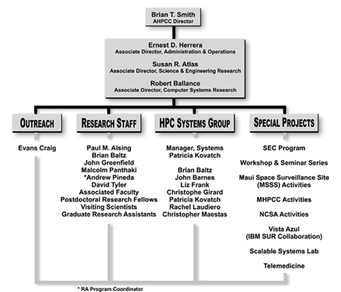

About AHPCC
- What is our mission?
- Our mission at the Albuquerque High Performance Computing Center is to advance high performance computing, its applications, and its deployment through computing science and technology, computational science, research, education, outreach and training.
- What are we about?
- The Albuquerque High Performance Computing Center (AHPCC) is about
people, resources and activities that are …
… prototyping and deploying the most advanced computing systems as large systems for production research, including a 128 processor Linux Intel supercluster, Roadrunner, for NSF researchers and three other research superclusters for research, training support, and computational services. In the summer 2000, operation of a 512-processor Linux supercluster, LosLobos, begins for research production service to NSF academic researchers. ...More - Where did we come from?
- A Short History "From Resource Center to Supercomputing
Center"
- The Albuquerque High Performance Computing Center
is a recently established Center at the University of New Mexico. It
began as an outgrowth of the "Maui Project," the forerunner
to the High Performance Computing Education & Research Center and
the umbrella Center under which the AHPCC and MHPCC conduct their missions.
The AHPCC has evolved in six years from a small resource Center into
a nationally recognized supercomputing Center.
...More
- How are we organized?
-

- Map & Directions

- From Airport to AHPCC:
Head North on Yale Ave. out of Airport.
Turn Left (West) onto Girard.
Turn Right (North) onto University.
Go three miles to Central Ave.
Turn left onto Central Ave.
(Note: You will be looking at AHPCC.
Park in the rear of the building.
Ask receptionist for a parking permit.)
From North I-25:
Head south through the "Big-I."
Turn left (East) onto Central Ave.
Turn left into AHPCC's parking lot.
From South I-25:
Head north.
Exit onto Central Ave.
Turn right (east) onto Central
Turn left into AHPCC's parking lot.
From I-40:
Go South onto I-25
Head south through the "Big-I."
Turn left (east) onto Central Ave.
Turn left into AHPCC's parking lot.

| The
University of New Mexico Albuquerque High Performance Computing Center Galles Building - 1601 Central Avenue, NE Albuquerque, NM 87131 Phone # 505.277.8249000000Fax # 505.277.8235 |
Date Modified: July 31, 2000 | |